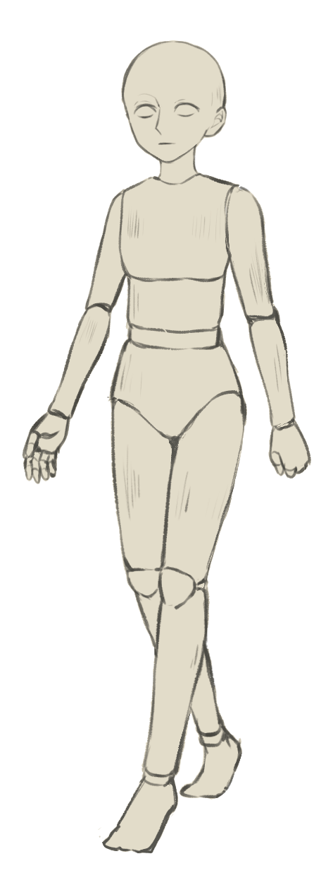

この世界には、ふたつの世界があります。
わたしたちが暮らす「物質の世界」と、目には見えない「高次元の世界」。
高次元では、魂は素体人形のような「魂の容れ物」という姿で表されます。
魂たちは、女神さまや星座たち、天使と悪魔から、「生きる」ことを学んでいます。
やがて物質世界に人間として生まれた魂は、それぞれの個性を育みながら、ひとつの人生を生きていきます。
人生を終えた魂は、再び高次元へ。
そうしてふたつの世界で学びを繰り返し、いつかすべての学びを終えた魂は、夜空に輝く星になるのです。
これは、魂と、その旅を見守るしろい天使たちのお話。
